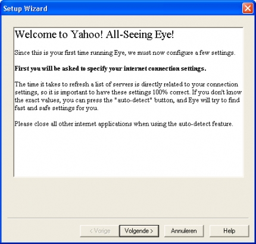
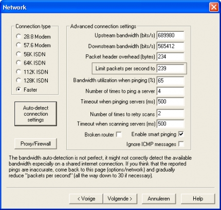
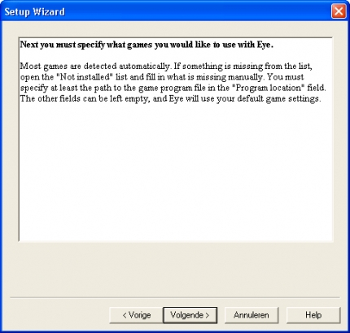
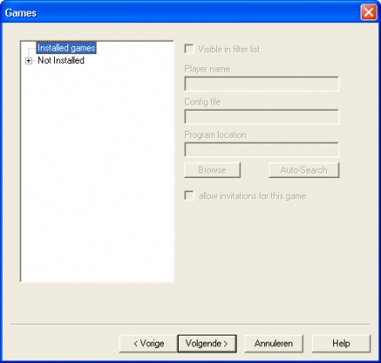
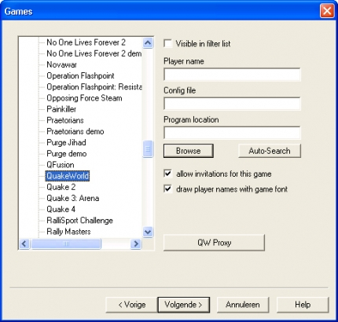
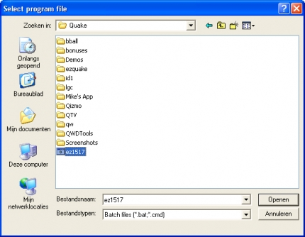
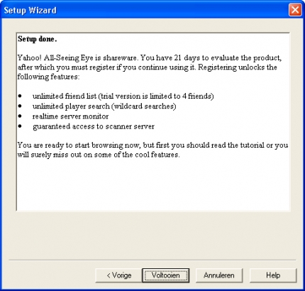
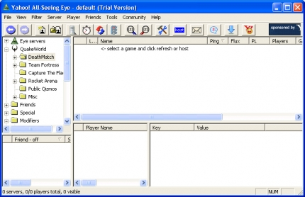
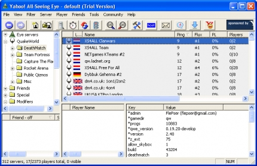

Using The All Seeing Eye (ASE)
Step 1
Download ASE from here
Step 2
Press next:

Step 3
Press: Auto detect connection settings, then accept and press next again:

Step 4
Press next:

Step 5
You can add your installed games to the list.

Select quakeworld and press browse:

Browse to your quakeworld folder, you can select a .exe and add a command line yourself. Or if you already have a .bat file with the command line in it, you can select the .bat file

Step 6
Press next:

Step 7
Select a gamemode:

Step 8
Press the refresh button (blue/red arrow button or press F5) ASE will scan all the servers.

If you find a server you would like to join, just dubbleclick on the server, quake will be launched and connect automaticly.
***When you’re using a .bat file you need to add %1 %2 in the command line, else it won’t automaticly connect to the server***